The Story
A team is paged at 2am: customer signups are failing intermittently. The service has not been deployed in three days. Some pods return HTTP 500, others return 200. The on-call engineer SSHes into two failing hosts and one healthy host and runs java -version. Two hosts report 17.0.9, the third reports 17.0.11. Same image tag (myservice:2.4.1), same Kubernetes manifest, same cluster — different bytes on the host. The investigation eventually finds it: someone re-ran the build pipeline on Wednesday for an unrelated reason, the CI re-pushed 2.4.1 (a mutable tag), and the prod hosts that got rescheduled after Wednesday pulled the new bytes; the pods scheduled before Wednesday were still running the old bytes from their image cache. The “deploy” — the thing the team thinks is the unit of change in production — was not actually the unit of change. The unit of change was which bytes a particular host pulled at a particular moment, and that decoupled silently from the version label everyone was looking at. This entire note is the model that, if you carry it in your head, makes that incident inconceivable instead of mysterious.
1. The Whole Pipeline at a Glance
Before zooming into any single piece, fix the shape of the whole pipeline in your head. From source commit to a running process on a Linux host, the artifact transforms several times, and most engineers can name 3 of the 6 stages cleanly. The other 3 are where production magic hides.
The stages, in order:
- Source — a git commit on a branch.
- Build artifact — in your case a
.jar. The output ofmvn package/gradle build. Self-contained Java bytecode. Cannot run without a JVM. - OCI image — the
.jarplus a base layer (Alpine + JDK 17) plus your company’s proprietary runtime layers, packaged into a stack of read-only filesystem layers + a manifest + a config blob. Cannot run without a container runtime. - Registry entry — the image uploaded to a registry (Artifactory, ECR, GCR), addressable by tag (
myservice:2.4.1) and by digest (myservice@sha256:abc…). Cannot run by itself; it is just bytes at rest. - Host-resident image — the same bytes, now present on a specific Kubernetes node’s local disk after the kubelet asked containerd to pull them. Layers are stored deduplicated across all images on that node.
- Running container — a Linux process executing inside namespaces (PID, network, mount, IPC, UTS, user) with cgroups capping its CPU and memory, viewing the image layers stacked under overlayfs as if they were one root filesystem. PID 1 inside the namespace; some four- or five-digit PID from the host’s perspective.
The version number that everyone refers to (2.4.1) lives at stage 4 as a label on the registry entry. The bytes that actually execute live at stage 6. Everything in this note is about closing the gap between those two things.
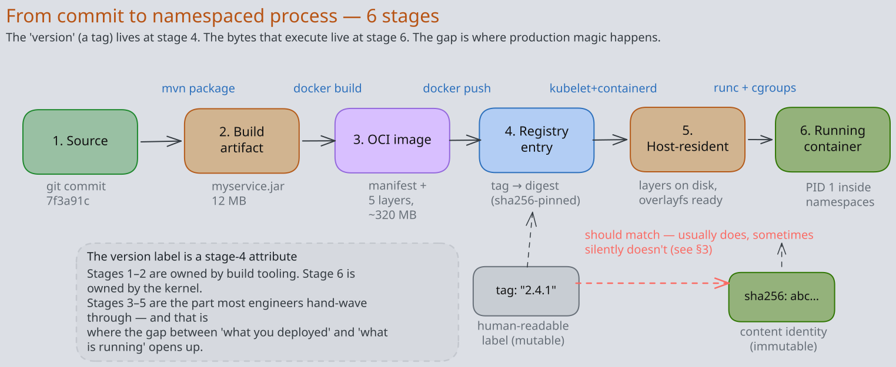
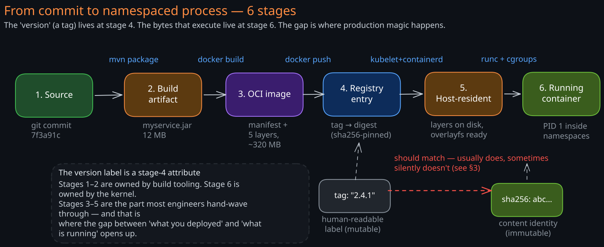
2. What an OCI Image Actually Is
An “image” in 2026 follows the OCI Image Specification — the de-facto standard maintained by the Open Container Initiative since 2017, when Docker, CoreOS, and Red Hat agreed that Docker should not own the format. Every major registry (Docker Hub, ECR, GCR, Artifactory) speaks OCI. Podman, containerd, and CRI-O all consume OCI images. Your docker build produces an OCI image whether you set out to or not.
An OCI image is three things, not one:
- An ordered list of layer tarballs. Each layer is a gzip-compressed tar of the filesystem changes contributed by one step in the build. Each layer has a content-addressed identity:
sha256(<the tar bytes>). - A config blob. A small JSON document describing the entrypoint, the working directory, the environment variables, the user, the exposed ports, the build history. Has its own sha256.
- A manifest. A small JSON document that lists the config blob’s digest and the ordered list of layer digests. The manifest’s sha256 is the image’s digest — the
sha256:abc…you see indocker pulloutput.
Each line in your Dockerfile that touches the filesystem produces one layer. Lines that only set metadata (ENV, WORKDIR, USER, LABEL) update the config blob without producing a layer. So a Dockerfile like:
FROM alpine:3.19 # 1 base layer (~7 MB)
RUN apk add --no-cache openjdk17-jre # 1 layer (~85 MB)
RUN adduser -D -u 1000 svc # 1 layer (~1 KB)
WORKDIR /app # config only, no layer
COPY target/myservice.jar /app/myservice.jar # 1 layer (~12 MB)
USER svc # config only
ENTRYPOINT ["java","-jar","/app/myservice.jar"] # config onlyproduces 4 layers — the base plus 3 RUN/COPY layers — and one config blob. Total image size is the sum of layer sizes (plus a kilobyte of manifest/config). Layer ordering matters: putting COPY myservice.jar before RUN apk add openjdk would invalidate the JDK layer every build, defeating layer caching. This is why production Dockerfiles place the least-frequently-changing lines first.
A real production image at your company is taller than this — typically: distro base, JDK, proprietary runtime, observability agent, application JAR — but the structure is identical. Five to eight layers, totaling 200-400 MB, of which only the top 1-2 layers change per build.
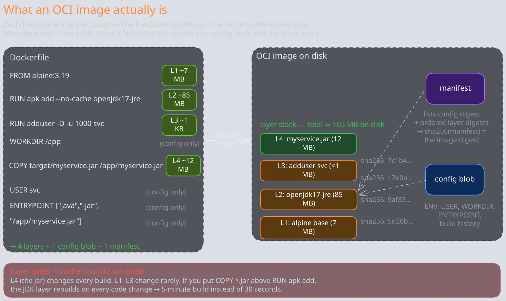
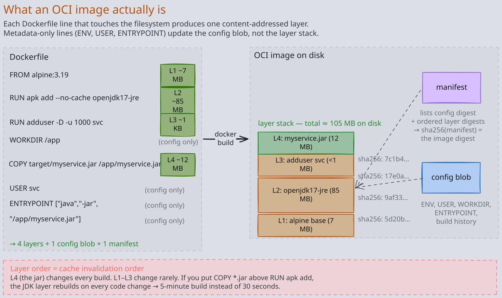
3. Tags Lie. Digests Don’t.
This is the single most important section of the note. The 2am story in the opener is this section.
There are two ways to refer to an image in a registry:
- By tag —
myservice:2.4.1. A tag is a mutable pointer. The registry stores a mapping(repository, tag) → manifest digest. Anyone with push access can re-point the tag to a different manifest at any time. The registry will accept it; no audit log line is mandatory. The bytes the tag previously pointed to remain in the blob store (until garbage collection runs), but nothing connects them to the tag anymore. - By digest —
myservice@sha256:abc123…. A digest is an immutable reference. It is the sha256 of the manifest. The manifest in turn pins the config blob’s digest and every layer’s digest by sha256. So the same digest is guaranteed — by cryptographic preimage resistance, not by convention — to refer to the same bytes forever. Re-push the same tag with different content? You get a new digest. The old digest still resolves to the old bytes.
This distinction is why the 2am incident was possible. The pods all said they were running 2.4.1. The deployment manifest said image: myservice:2.4.1. The CI logs said the build produced 2.4.1. Everyone was looking at the tag. The bytes on disk were different because the tag was re-pointed on Wednesday and the host-level image cache (which is keyed by digest) had different digests on different hosts.
The fix is operational, not magic: prefer deploying by digest. Tools like Kubernetes’ admission controllers, ArgoCD’s image-updater, or Spinnaker’s bakery can resolve myservice:2.4.1 to myservice@sha256:abc… at deploy time and then propagate the digest into the manifest. The tag is preserved for humans to read; the digest is what the cluster actually pulls. If your environment does this, congratulations — you have a property the 2am team did not. If it doesn’t, you have a class of incident waiting to happen.
There is one more reason digests matter: rollback. If you redeploy myservice:2.4.0 (the previous “good” tag) and someone has since re-pointed 2.4.0 to different bytes — a hot-fix nobody told you about, an accidental re-push, a compromised CI account — your rollback is not the same code that was previously in production. A digest-based rollback is. This is why every serious release tool stores the digest in the audit trail, not just the tag.
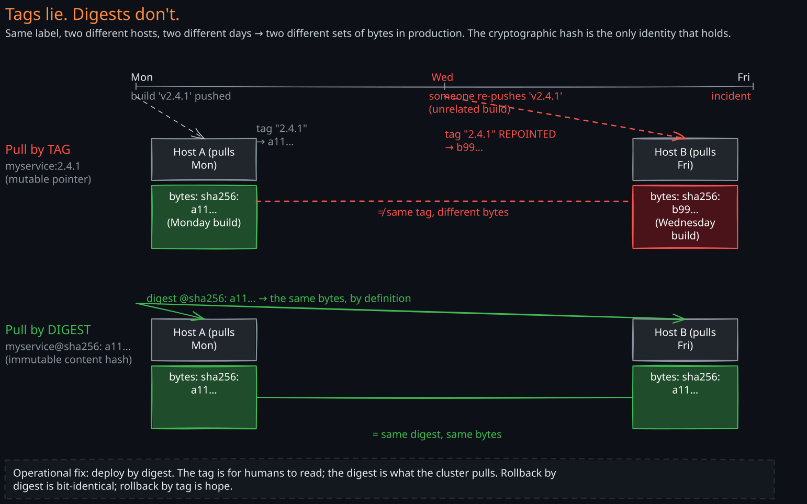
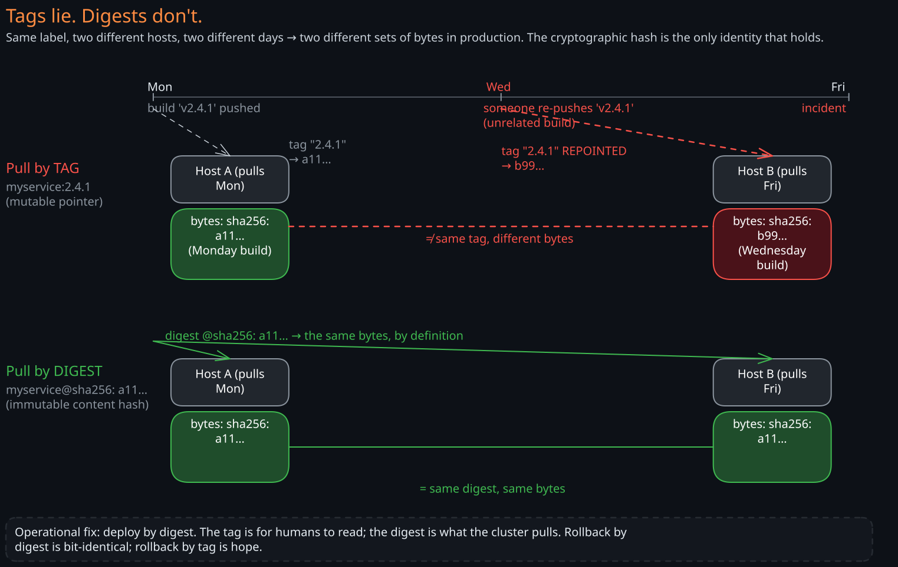
4. The Registry — Content-Addressable Storage with Two Indices
A container registry looks like a website but it is structurally a two-table database with a blob store hanging off the side. Once you see this, the API surface (docker pull, docker push, crane) makes immediate sense.
The two indices are:
- The tag index. A small key-value table:
(repository, tag) → manifest digest. This is the only mutable thing in the registry. When youdocker push myservice:2.4.1, the registry computes the manifest digest, ensures the manifest blob exists, then updates this row to point the tag at the new digest. Re-pushes overwrite the row. - The manifest store. A blob store keyed by manifest digest. Manifests are JSON; small, ~1 KB each. Immutable — once a manifest is uploaded under its sha256, it is never modified, only garbage-collected when nothing references it.
Plus the actual content store:
- The blob store. A content-addressed object store, keyed by
sha256(<layer tar>). This is where the gigabytes live. Layers are immutable for the same reason manifests are: their key is their content hash, so any change produces a different key. Layers are globally deduplicated across all images in the registry — if two different images both includealpine:3.19’s root layer, only one copy of those bytes is stored.
This explains why pushing the 10th version of an image takes seconds even though the image is 300 MB. The push protocol is:
- Client computes the manifest locally, knows all the layer digests.
- Client sends a
HEAD /v2/myservice/blobs/<digest>for each layer. - Registry returns 200 (exists) or 404 (missing).
- Client uploads only the 404 layers — typically just the top app layer if base + middle layers were unchanged.
- Client uploads the new manifest.
- Client updates the tag.
Pull is symmetric. The client pulls the manifest, sees the layer list, checks its local cache for each digest, and downloads only the missing layers in parallel. This is also why production environments run a pull-through cache (a regional registry mirror) — prod hosts mostly see cache hits on the base and middle layers, downloading only the new app layer from the upstream registry. Removes a single point of failure and saves substantial bandwidth.
The deduplication also has a less-obvious safety property: the alpine:3.19 layer your app is built on is byte-identical to the alpine:3.19 layer every other team’s app is built on, because the digest is content-derived. You cannot accidentally introduce per-team drift in a shared base layer; if the bytes differ, the digest differs, and the digest difference propagates upward.
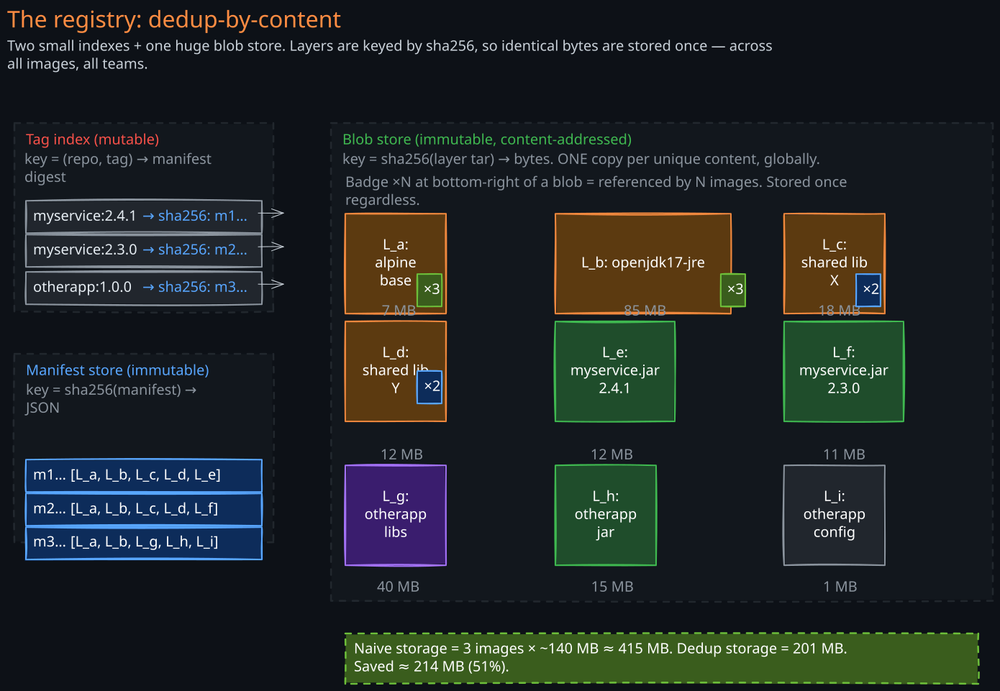
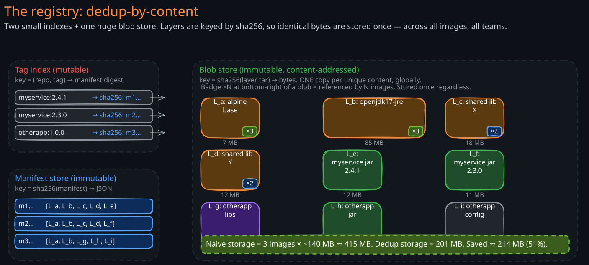
5. Where the Version Number Actually Comes From
Item 5 on your self-diagnostic was “how does the version on the image tag get generated?” — the answer in most modern CI is that it is derived from your commit messages by a tool, not picked by a human. The tool is some variant of semantic-release, release-please, or a homegrown equivalent. The convention they all consume is Conventional Commits.
The rule is a finite-state machine over the commit log since the previous git tag:
- If any commit since the last release has
BREAKING CHANGE:in its body (or a!after the type, likefeat!:), bump the major version. Reset minor and patch to 0.1.4.2 → 2.0.0. - Else if any commit is
feat: …, bump the minor version. Reset patch to 0.1.4.2 → 1.5.0. - Else if any commit is
fix: …, bump the patch version.1.4.2 → 1.4.3. - Else (only
chore:,docs:,refactor:,test:, etc.), do not release.
The tool then, in order:
- Computes the new version.
- Updates package metadata files (
package.json,pom.xml, etc.) and generates a changelog from the commit messages. - Creates a git tag (
v2.0.0) and pushes it. - Triggers the image build, which tags the resulting OCI image as
myservice:2.0.0andmyservice:latest. - Pushes the image to the registry, capturing the resulting
sha256:digest. - Records the
(version, digest, commit sha)triple in a release database (or as a git annotated tag, or as a GitHub Release).
Step 6 is the audit trail that makes rollback safe. Without it, “deploy version 2.4.0” is a tag lookup that might or might not resolve to the same bytes today as it did yesterday (see §3). With it, “deploy version 2.4.0” is a digest lookup, which is deterministic forever.
There is a second mode worth knowing: calendar versioning (CalVer) — 2026.06.08-1234 — which encodes the build timestamp and CI build number. CalVer makes the “when was this built?” question trivial but throws away the breaking-vs-non-breaking signal that semver carries. Most internal service-to-service work uses semver (because contract tests need to know whether to fail on a major bump — see Testing Strategies §5); user-facing apps often use CalVer.
Either way: the version is machine-derived from the source, not invented by a human. This decoupling — humans write commits, tools compute versions — is what makes the release pipeline trustworthy at scale.
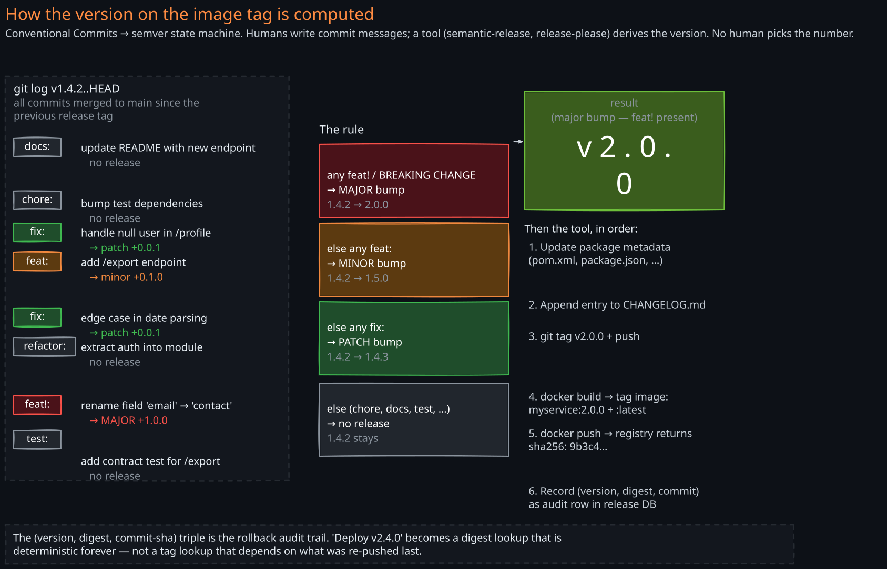
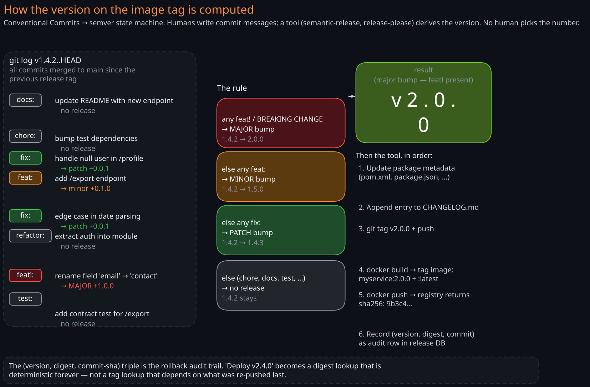
6. What Actually Happens When a Host Runs Your Pod
This is the section that closes item 11 on the diagnostic — “what happens on the host when a pod starts?” The answer is more interesting than “the container starts,” and it explains every operational property of containers that surprises engineers (ps showing your PID as 1, df showing weird filesystem layouts, top showing memory limits that aren’t on the host, network interfaces that don’t exist on the host).
A container is not a virtual machine. It is a regular Linux process. What makes it a “container” is that the process runs inside a set of Linux kernel features that restrict what it can see and use. There is no hypervisor. The host kernel runs the process directly; the kernel itself enforces the isolation.
When a pod is scheduled to a node, the sequence is:
- API server tells the kubelet on the target node “you have a new pod, here is the spec.”
- Kubelet calls the CRI (Container Runtime Interface, a gRPC API). The CRI implementation is containerd or CRI-O. The call is “create a sandbox + create containers in it.”
- The runtime pulls missing layers from the registry (or local cache or pull-through mirror), verifying each layer’s sha256 against the manifest’s claim.
- The runtime materializes the root filesystem by stacking the layers using overlayfs: each layer becomes a read-only directory; one new empty writable directory is laid on top. Overlayfs presents the union as a single coherent
/, with reads “looking through” the layers in order and writes landing on the top writable layer. This is fast and deduplicated — the same base layer directory is reused across every container on the host. - The runtime invokes runc (the OCI low-level runtime). runc creates the new Linux namespaces and cgroups, then
execs the entrypoint (yourjava -jar) as PID 1 inside the namespace. The host sees the same process with a different PID (e.g., 47823) and full visibility; the process inside sees a private world.
The “private world” is a stack of six Linux namespaces, each isolating a different resource:
- PID namespace — the process tree is private. Your
javaprocess is PID 1; its children are PID 2, 3, … .kill -9 1from inside the namespace kills the container. - Network namespace — a private network stack. Own interfaces (
eth0inside is avethpair connected to a bridge on the host), own routing table, own iptables. This is how every pod gets its own IP without colliding. - Mount namespace — a private set of mounts. The overlayfs root is mounted here. The host’s
/etc/passwdis invisible unless explicitly mounted in. - IPC namespace — private POSIX message queues, semaphores, shared memory.
- UTS namespace — private hostname and domain name.
- User namespace — (optional, often disabled in Kubernetes) private mapping of UIDs. Allows root-inside to be a non-root UID on the host.
Cgroups are the resource dimension, orthogonal to namespaces (which are the visibility dimension):
- CPU cgroup —
requestsbecomes a CPU-shares weight (proportional scheduling under contention);limitsbecomes a hard CPU-bandwidth ceiling enforced by the scheduler. Hit the ceiling? Your threads are throttled, not killed. - Memory cgroup —
limits.memoryis a hard ceiling. Exceed it? The kernel’s OOM-killer fires inside the cgroup and kills the highest-scored process. Almost always your JVM, almost always silently from the application’s perspective — one moment you are running, the next you are gone. Container exit code 137 = SIGKILL = OOM-kill the vast majority of the time.
Putting it together: a “container” is a regular Linux process whose visibility is restricted by six namespaces and whose resource use is capped by cgroups, with its filesystem provided by overlayfs over a stack of immutable image layers. No virtualization. No magic. The “container” abstraction is an entirely user-space and kernel-feature composition; it is not a primitive of its own.
This model explains every container-specific operational property:
- Why your container thinks it has 64 GB of RAM when the limit is 2 GB. The JVM reads
/proc/meminfo, which is not cgroup-aware by default. You need-XX:+UseContainerSupport(default on JDK 10+) for the JVM to read the cgroup memory limit instead. Older JVMs request heap based on host RAM and OOM-kill immediately. - Why
kill -9 1inside the container terminates the container. PID 1 is your JVM. There is no init system above it. Kill PID 1 → namespace tears down → container exits. - Why two containers on the same host can both bind port 8080. Separate network namespaces, separate sockets.
- Why exec-ing into a container shows a different
/etc/hostnamethan the host. Separate UTS namespace. - Why your application can’t see other tenants’ processes. Separate PID namespace —
ps auxonly enumerates processes in your namespace.
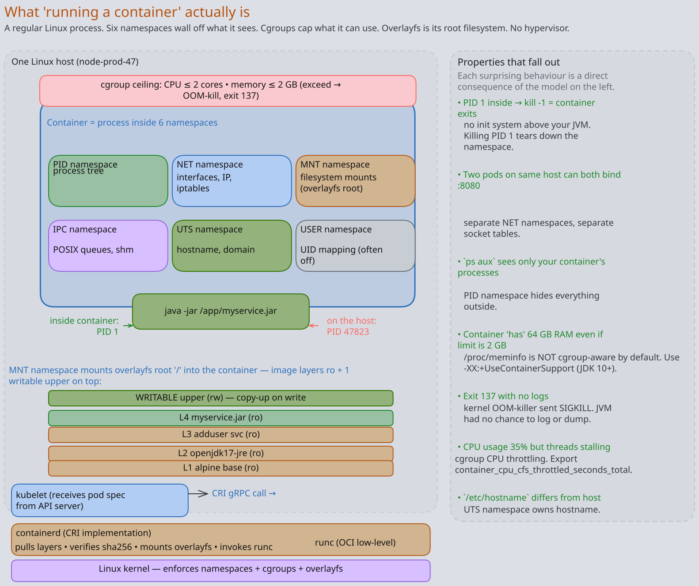
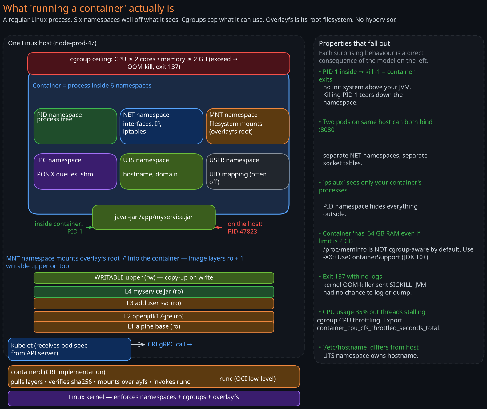
7. The Operational Gotchas That Fall Out of the Model
Once the model in §§1-6 is in place, a long list of production gotchas becomes obvious — they are not exceptions to learn, they are predictions of the model. A small selection that catch teams repeatedly:
image: latestis a footgun.latestis just another mutable tag; nothing about it implies “the most recent version.” It points to whatever was last pushed with thelatesttag, which might be a year-old hotfix branch. Use specific tags in dev, use digests in prod, never uselatestin production manifests.- Image cache != registry cache != builder cache. Three different caches at three different layers. The builder cache (BuildKit) caches build-step outputs to speed up subsequent builds. The registry cache (pull-through mirror) caches registry responses to save WAN bandwidth. The image cache (containerd’s content store on each node) caches pulled layers to avoid re-pulling. Invalidation logic is different in each. A “cache problem” without a specified cache is a non-question.
- OOMKilled is silent from the JVM’s perspective. The kernel OOM-killer fires SIGKILL; the JVM has no chance to flush logs, write a heap dump, or notify a monitor. You will see the container restart, exit code 137, and nothing in the app logs explaining why. Always enable memory metrics (01-Observability §2) and configure
-XX:+HeapDumpOnOutOfMemoryError -XX:HeapDumpPath=/dumpfor application-level OOMs; the cgroup OOM is separate and needs a kernel-level monitor. - CPU throttling is invisible without
container_cpu_cfs_throttled_seconds_total. Hit the cgroup CPU ceiling, your threads sleep at scheduler boundaries, your p99 latency spikes, your CPU graph shows you using less than your limit. Throttling does not show up on a typical “CPU usage” metric. Always export and alert on the throttling counter. - Layer ordering changes your build speed by 10x.
COPY ./codenear the top invalidates every layer below it on every code change.COPY pom.xml; RUN mvn dependency:go-offline; COPY ./codenear the bottom caches the dependency download across all code changes. Worth 5 minutes per build on a large Java project. - Pulling by tag in CI breaks reproducibility. Two CI runs of the same git SHA can produce different images if the FROM tag was re-pointed between runs. Pin base images by digest in production-grade Dockerfiles.
docker execopens a new process in the namespaces, not in the container’s process tree. It is not a child of PID 1. Killing PID 1 terminates the container; killing the exec shell does not. Useful in debugging: a container can be “alive” (PID 1 healthy) while every diagnostic shell you spawn is dead.- Building on macOS / Windows for a Linux production target requires
--platform=linux/amd64— otherwise BuildKit will quietly produce an ARM image (on Apple Silicon) that fails to start on x86 prod hosts withexec format error. The error message is unhelpful; the root cause is one missing flag.
Each of these is a direct consequence of the model. The point of internalizing the model is not to memorize gotchas; it is to predict them when you see a new failure mode.
Revision Summary
- The pipeline has 6 stages: source → JAR → OCI image → registry entry → host-resident image → running container. Most engineers can name 3 cleanly; production magic hides in the other 3.
- An OCI image is a manifest + a config blob + an ordered list of layer tarballs, all content-addressed by sha256. Each Dockerfile line that touches the filesystem is one layer; metadata-only lines (
ENV,USER,ENTRYPOINT) update the config blob only. - A tag is a mutable pointer; a digest is an immutable content hash. Pulling by tag at different times can return different bytes. Pulling by digest cannot. Deploy by digest in production to make rollbacks bit-identical and to make “version drift” inconceivable.
- A registry is two indices over a content store — a tag index (mutable), a manifest store (immutable, sha256-keyed), a blob store (immutable, sha256-keyed, globally deduplicated). Pushes upload only missing layers; pulls download only missing layers. Pull-through caches near prod save WAN bandwidth and de-risk upstream registry outages.
- Image versions are machine-derived from commits, not human-picked. Conventional Commits (
feat:,fix:,BREAKING CHANGE:) drive a semver state machine via semantic-release or release-please. The tool publishes a(version, digest, commit sha)triple that becomes the rollback audit trail. - A “container” is a regular Linux process inside 6 namespaces (PID, NET, MNT, IPC, UTS, USER) with cgroup caps on CPU and memory, viewing the image as overlayfs-stacked layers. No hypervisor; the host kernel enforces isolation directly.
- Pod startup on a host: kubelet → CRI gRPC call → containerd pulls missing layers (sha-verified) → overlayfs materializes the root → runc creates namespaces + cgroups + execs the entrypoint as PID 1 inside.
- OOMKilled (exit code 137) is silent. The kernel OOM-killer fires SIGKILL; the JVM cannot log or dump. Always export the cgroup memory and CPU-throttling metrics (01-Observability) and configure
-XX:+UseContainerSupportso the JVM reads the cgroup limit instead of host RAM. - CPU throttling is invisible without the throttling counter — you can be at 40% CPU on the usage graph while every thread sleeps at scheduler boundaries waiting for the cgroup window to refill.
- Layer ordering dominates build speed. Frequently-changing lines (your code) belong at the bottom of the Dockerfile; rarely-changing lines (base image, system packages, dependency download) belong at the top. A misordered Dockerfile rebuilds ~everything on every commit.
Deep Understanding Questions
-
Your team ships
myservice:2.4.1. A week later, a hotfix is built and re-pushed under the same tag2.4.1. New pods scheduled after the hotfix pull the new bytes; pods scheduled before never restart and still run the old bytes. What doeskubectl get pods -o jsonpathshow for the image field on each, and what concretely would you change in the deployment pipeline so this cannot happen again? -
You inspect the manifest of two image tags,
myservice:2.4.1(built today) andmyservice:1.0.0(built two years ago), and find they share three identical layer digests. Walk through the build mechanism that produces this sharing, what is stored in the registry for those shared layers (one copy or two?), and what would change about the storage if you rebuilt1.0.0from scratch on today’s CI. -
A pod reports exit code 137. The application logs show the request that was being processed completing successfully and then nothing. There is no exception, no graceful shutdown message, no Spring lifecycle hook firing. Reconstruct the most likely chain of events, identify which kernel facility delivered the kill signal, and explain why the JVM had no opportunity to react.
-
Your
Dockerfileis:FROM alpine:3.19 COPY src/ /app/src/ RUN apk add openjdk17-jre && cd /app && ./mvnw packageYou change one Java file. The image rebuild takes 4 minutes, identical to a from-scratch build. Explain why the layer cache is not helping, propose a reordering that brings the incremental build under 30 seconds, and explain what layer caching is actually keyed on so the proposed reordering works.
-
A
docker pull myservice:2.4.1from a prod host completes in 800 ms, transferring 12 MB. The image is 320 MB. Explain the pull protocol that produced this outcome — which HTTP calls were made, which returned cache hits and which returned bytes, and what would have to be true about this host for the pull to instead take 30 seconds and transfer the full 320 MB. -
Your team’s CI generates versions via Conventional Commits. A developer accidentally writes the commit message
Fix the broken thing(English prose) instead offix: handle null user. They merge to main. What version does the release tool produce, what artifact (if any) gets pushed to the registry, and what is the failure mode of finding out that this happened? -
A pod is healthy: liveness probe passing, readiness probe passing, request latencies normal.
container_cpu_cfs_throttled_seconds_totalis climbing at 0.4 s/s (out of 1 s wall time). The CPU usage graph in your dashboard shows 35% utilization. Reconcile these three facts — explain what is actually happening to the process’s threads, what the user-visible symptom will be, and which cgroup parameter would you tune. -
You inherit a service that mounts the host’s
/var/run/docker.sockinto the container so the application can launch sibling containers. A security review flags this as a critical finding. From the model in §6, explain precisely what isolation property is broken, what an attacker who compromises the application process can do as a result, and what alternative architecture would let the application still launch sibling work without this property loss.